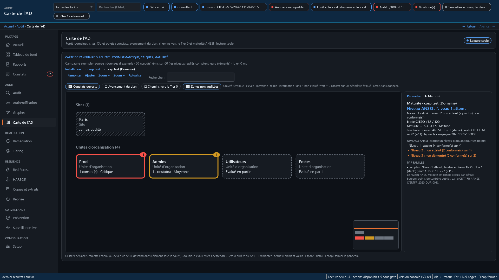

1AuditerPrès de 400 contrôles ancrés sur des référentiels publics (ANSSI, CIS, MITRE ATT&CK). Campagne complète en quelques minutes, en lecture seule, un verdict par contrôle avec sa preuve.
2VoirLa carte de votre annuaire, de la forêt à l'objet, colorée selon la gravité ; les chemins d'attaque vers le Tier 0 ; la maturité selon les niveaux publiés par l'ANSSI.
3SurveillerLes changements sensibles du Tier 0 détectés en quelques secondes : groupes privilégiés, délégations, comptes de service gérés, GPO liées aux contrôleurs.
4CorrigerUn catalogue de remédiations, chacune avec son plan, son approbation et son retour arrière. Le suivi du reste à faire, campagne après campagne.
5ReprendreRestauration isolée et durcissement après compromission, conduits pas à pas. En préparation.
6Rendre compteRapport interactif hors ligne, Word et PDF navigables, bandeau « document sensible ». Tout est cliquable, rien ne part sur le réseau.

- Zoom de la forêt jusqu'à l'objet
- Calques : constats ouverts, avancement du plan, chemins vers le Tier 0, zones non auditées
- Le plus grave trouvé en deux clics
- Niveau atteint seulement si tous ses points sont prouvés
- Un point non vérifié laisse le niveau « non démontré »
- Note CITSO sur 100 et tendance d'une campagne à l'autre

Deux façons de déployer
Consultant
- Installation portable, une mission par client
- Campagne et rapports remis sur place
- Transfert chiffré vers la plateforme ; paquet altéré, rejoué ou d'un autre client refusé
- Clôture avec purge prouvée
À demeure
- Plateforme dans votre infrastructure, raccordée à vos forêts
- Tableau de bord, surveillance continue
- Suivi du reste à faire
- Forêt d'administration (Red Forest) : CITSO et vos comptes Tier 0 dans une forêt isolée, jamais jointe ; la production lui fait confiance à sens unique
Ce qu'il faut de votre côté
- Un poste ou un serveur Windows avec PowerShell 5.1 ; aucune jonction au domaine pour le mode consultant.
- Un compte de lecture ordinaire, membre du groupe « Lecteurs des journaux d'événements » pour la surveillance.
- L'accès LDAP (389/636) aux contrôleurs de domaine, et SMB (445) pour la lecture des stratégies de groupe.